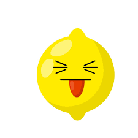

Welcome to Lemons & Stitches
New stitches for sour lemons
Demographic switch in the Knitwear community as the older demographic is overwhealmed by the amount of new makers joining the community thanks to Lemons & Stitches
Empowering Knitwear Creatives Online
Demographic switch in the Knitwear community as the older demographic is overwhealmed by the amount of new makers joining the community thanks to Lemons & Stitches